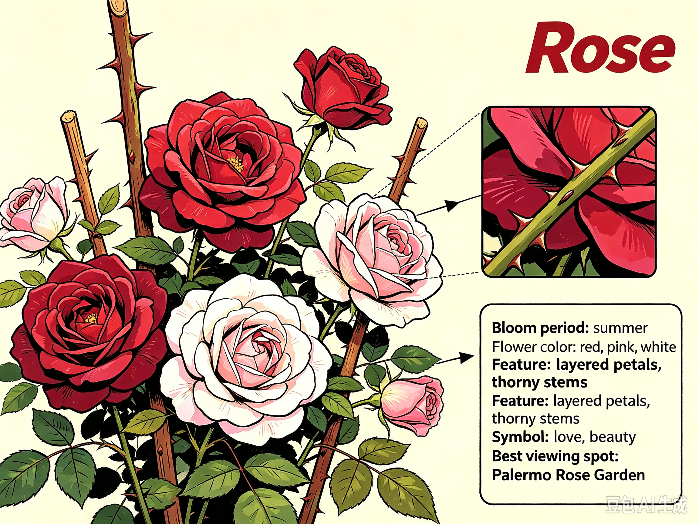
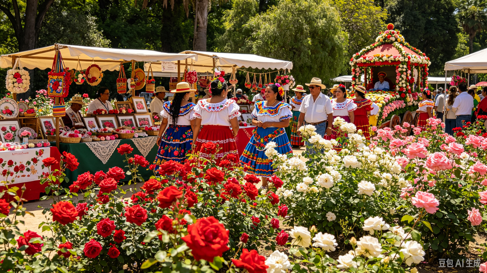

Rose a timeless romantic flowering shrub belonging to the Rosaceae family. It comes in countless colours including deep red, blush pink, creamy white and vibrant magenta. Each bloom consists of layers of soft, velvety petals, paired with thorny woody stems and a rich, sweet fragrant scent. Roses universally symbolise love, passion, beauty and admiration. Argentina's mild temperate climate and fertile soil create perfect growing conditions for roses. The famous Rosedal garden holds more than 18,000 rose bushes and hundreds of varieties. Every summer, the whole garden blooms abundantly, filling the air with soft floral aroma.

The annual Fiesta de la Rosa (Rose Festival) is held every summer in Buenos Aires. There are rose exhibitions, flower judging competitions, live music, local craft stalls and photography activities. Visitors can stroll through the rose garden, enjoy floral workshops and buy rose-scented souvenirs.

Best Time: May-August
Location: Rosedal de Palermo, Parque Tres de Febrero, C1425 Ciudad Autónoma de Buenos Aires, Argentina
How to Get There: From central Buenos Aires, take the Buenos Aires Subway Line D to Palermo Station. It takes about 15 minutes from city centre, then a short 5-minute walk to Rosedal.
GPS Coordinates: -34.5698° S, -58.4130° W
Buenos Aires, Argentina